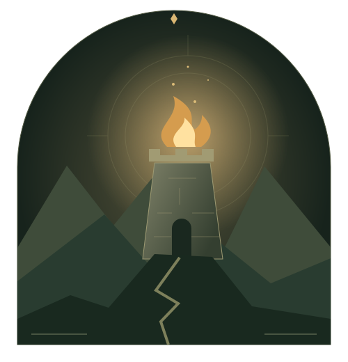

A collection earned in battle.
Lifetime honorable kills unlock 69 cards, from your first milestone at 5 kills to your final unlock at 1,000. Your existing kills count. Discover each card in your in-game binder as you earn it.
GONDOR CALLS FOR RAID · WOW FOREVER
Turn your honorable kills into a collection. Rally your guild when the fight finds you. Make every journey to a guildmate count.
Download Gondor PvP ↓0.9.1 beta · 74.4 MiB ZIPWoW Forever · Interface 16001 · No required addon dependencies

EARN YOUR PLACE IN THE STORY
Lifetime honorable kills unlock 69 cards, from your first milestone at 5 kills to your final unlock at 1,000. Your existing kills count. Discover each card in your in-game binder as you earn it.
Opt in to PvP death alerts or request help through Kill Share. Guildmates can accept your request and follow your location. Incoming offers and death alerts are off by default.
Complete a Kill Share by meeting your guildmate in game. Helpers earn points based on travel distance, with a limit on repeat rewards from the same requester. Track your tally per character.
READY TO ANSWER?
Download the player ZIP above, then follow these steps.
Release notes & download details ↗Place the extracted Gondor_PvP folder inside your Forever Interface/AddOns directory. The Gondor_PvP.toc file should sit directly inside that folder.
Enable Gondor PvP at character selection. In game, type /gpvp or left-click the murloc minimap button.
Open Settings to opt in to death alerts and incoming Kill Share offers. Type /gpvp request to ask for help or /gpvp settings to adjust your preferences.